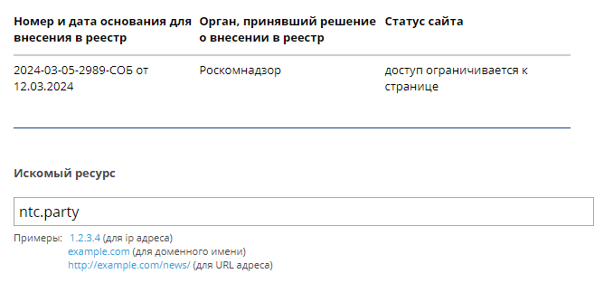

Похоже на ТСПУ начали блокировать домен ntc.party
Зависает подключение после clienthelllo пакета. Через TPWS на форум зайти получается
{kind=link}
PS. Похоже этот момент настал. Пора доставать шампанское)
Добавлен в реестр:

Сейчас соединение сбрасывается:
{kind=link}
Да, добрались гниды. Форум Антизапрета не открывается. Выскакивает ошибка PR_CONNECT_RESET_ERROR.
{kind=link}
А кто знает что происходит с обновлением реестра?
https://vigruzki.rkn.gov.ru/tooperators_form/
Собственно говоря с 04.03.2024 реестр не обновлялся.
Саму выгрузку брал отсюда: GitHub - zapret-info/z-i: Register of Internet Addresses filtered in Russian Federation
Да, его еще с лета грозились заблокировать сначала АЗАПИ, затем Роскомнадзор. Пока что, действительно, в выгрузке Реестра отсутствует.
Заблокировали из-за темы
Из-за @Colourban, к слову 
Э… Прошу прощения, конечно, но всё же за действия всех этих правоторговцев и их мерзейших прислужников в Думе и опричников в так называемых судебной и исполнительной властях полной ответственности я никак нести не могу. Вот. 
Так весь форум посвящён по обходу блокировок)
Реестр перестал обновляться. Неизвестно, временно из-за выборов или совсем.
Обновления возобновились.
Общая тактика обхода через nfqws, что работает для рутрекера, лостфильма и прочих, для ntc.party уже не прокатывает. Получается на разных уровнях локкают ? И что с этим делать ?
На нескольких провайдерах аномалий на этом домене не замечаю.
Может у вас фильтр стоит, и ntc туда не подгрузилось ?
Всегда можно блокчек прогнать
Перед тем как написать тот пост накинул ntc.party в список хостов и перезапустил nfqws, но не помогло, сайт всё равно залипал. Сейчас прилетело на мыло уведомление о посте и я полез на автомате по ссылке, которая открылась без прокси/vpn. Видать где-то что-то подвисло при накидывании хоста/перезапуске.
з.ы. Про блокчек были те же мысли, просто руки не дошли. Просто в конечном результате сомнения были т.к. подумалось, что сайты по новому закону локкать стали как-то по “особому” 
Если фильтр по ipset, то перезапуск nfqws не нужен, а нужно обновить ipset. А если по hostlist, достаточно killall -HUP nfqws
A post was merged into an existing topic: Контейнер VPN АнтиЗапрета для установки на собственный сервер
Да, похоже у вас, как и у меня, к ntc применяется особый способ блокировки - DPI защищается от обмана себя. С момента блокировки ntc я наблюдал следующее - в первые часы соединение замораживалось, видимо первым блокировать начал ТСПУ. Затем начали прилетать RST, похоже домен дошел до DPI моего провайдера. И вот, спустя пару дней, перестал работать disorder для этого домена.
Провайдер перестал пускать на ntc.party через goodbyedpi с параметрами: -f 1 -e 1 --wrong-seq --reverse-frag --max-payload --allow-no-sni
Остальные заблокированные сайты работают, как и раньше.
Пробился на ntc.party через DPITunnel с параметрами:
–split-position 1 --ttl 5 --desync-attacks fake disorder_fake
Параметры DNS опустил.
P.S. Mea culpa. По ошибке добавил домен не в тот файл. Исправил, пускает через goodbyedpi.
Это не провайдерский DPI, и не трансграничный ТСПУ. Отдельный движок в составе провайдерского ТСПУ пересобирает сессию. Возможно он экспериментальный, потому что работающие в параллель движки делают прежнюю работу для тех же правил. Он требует больше ресурсов и может иногда пропускать.
Инструменты по десинхронизации доступны миллионам. Ожидаемая реакция, после того как они озаботились информацией об информации.
VakdikSS, я слышал вы на Гитхабе ограничили возможность создания новых issue или как-то так, но может стоит там открыть раздел Discussion, как это сделано у bolvan, на случай если мы на этот форму однажды не сможем зайти никакими средствами?